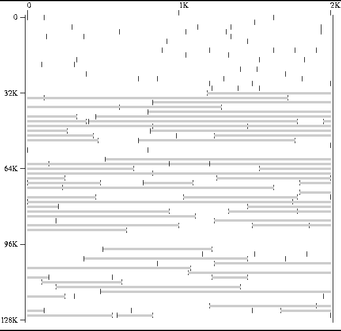
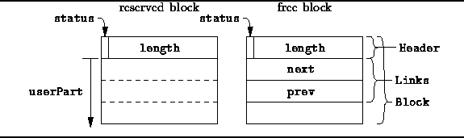

Data Structures and Algorithms
with Object-Oriented Design Patterns in C++
Data Structures and Algorithms
with Object-Oriented Design Patterns in C++The singly-linked free list used in the preceding section is kept sorted in order to facilitate the coalescing of adjacent free areas. The only way to determine whether a particular area is free is to see if it appears in the free list. Since we need to examine adjacent areas to determine whether they can be combined, the free list is kept sorted. That way, adjacent areas appear next to one another in the free list.
Unfortunately since the free list must be kept sorted, every time an area is released it must be inserted into the list at the correct position. This means that the running time of the Release operation is O(n) in the worst case, where n is the number of blocks in the storage pool.
The essence of the problem is that we cannot tell by looking at an area whether it is reserved or free. So, the solution must be to record the allocation status of the area in the area itself.
A secondary problem with the use of a singly-linked free list is that, given a pointer to an area, we cannot extract that area from the free list without traversing the list. This is because in order to extract an element from a linked list, we need to know the predecessor of that element. And in a singly-linked list we must search from the head of the list to find the predecessor. The solution is, of course, to use a doubly-linked free list.
Finally, we shall play an interesting algorithmic trick: In order to coalesce adjacent free areas, we need to traverse the free list. However, since we must traverse the free list in the Acquire operation, in order to find a free area of a suitable size, we shall do the coalescing in the Acquire operation and not in the Release operation. While this does increase slightly the running time for Acquire, it means that Release can run in constant time.
Figure  shows a memory map of
a storage pool managed using a doubly-linked list.
The reserved areas in Figure are exactly the same as those
shown in Figure .
The figure clearly indicates that there are adjacent
uncoalesced free areas in the free list.
What the figure cannot show is that the areas in the free list
are not sorted.
shows a memory map of
a storage pool managed using a doubly-linked list.
The reserved areas in Figure are exactly the same as those
shown in Figure .
The figure clearly indicates that there are adjacent
uncoalesced free areas in the free list.
What the figure cannot show is that the areas in the free list
are not sorted.

Figure: Memory Map of a Doubly-Linked Storage Pool
As before, we implement the storage pool as an array of Blocks.
The structure of a Block is shown in Figure .
A sequence of consecutive,
contiguous blocks in the array constitutes an area.
Only the first block in each area is used to keep track of the entire area.

Figure: DoublyLinkedPool::Block Structure Layout
Notice that we now encode two pieces of information in the block header: A single-bit is used to indicate whether the area is reserved or free and the remaining bits are used to record the length of the area (in blocks). By packing this information in a single word, we have not increased the space overhead associated with reserved areas.
Free areas are linked in a doubly-linked free list. Two pointers are required to accomplish this--prev and next. The effect of the extra pointer is to increase the minimum block size. However, since the pointers occupy space in the pool which would otherwise be unused, we do not require any additional space.
 Copyright © 1997 by Bruno R. Preiss, P.Eng. All rights reserved.
Copyright © 1997 by Bruno R. Preiss, P.Eng. All rights reserved.